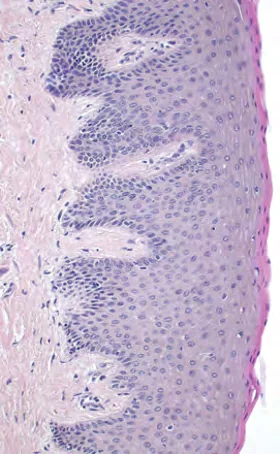
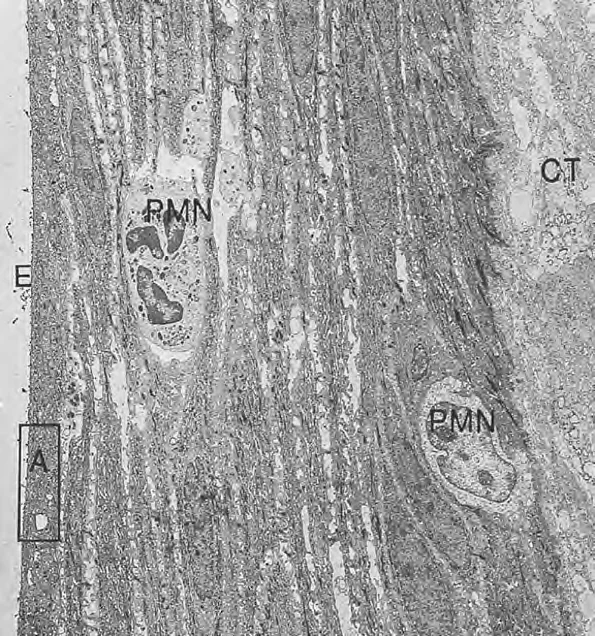

نسخه استخراجشده؛ ترجمه یا تأیید علمی انجام نشده است. وضعیت: captured
لثه از سه نوع اپیتلیوم ساخته شده که هر کدام محل و درجهی کراتینیزه شدن متفاوتی دارند:

اپیتلیوم دهانی (Oral / Outer Epithelium): سطح خارجی لثه که در معرض دهان است. کراتینیزه یا پاراکراتینیزه است و نقش سد محافظ مکانیکی را دارد.
اپیتلیوم سولکولار (Sulcular Epithelium): دیوارهی داخلی شیار لثهای را میپوشاند. غیرکراتینیزه است.
اپیتلیوم اتصالی (Junctional Epithelium): کف شیار را میسازد و لثه را به سطح دندان میچسباند. غیرکراتینیزه و کلیدیترین ساختار دفاعی پریودنشیوم است.
📌 قانون ساده: هرچه به سمت دندان و داخل شیار میرویم، کراتین کمتر و نفوذپذیری بیشتر میشود.
اپیتلیوم اتصالی (JE) یقهای از سلولهاست که دور گردن دندان را میگیرد و آن را به سطح دندان میچسباند.

مکانیزم چسبندگی: از طریق همیدسموزومها و لامینای بازال داخلی به سطح دندان میچسبد. این همان «اتصال اپیتلیالی» است.
شکل: از سمت کرونالی ضخیم (۱۵ تا ۳۰ سلول) و به سمت آپیکالی باریک (۱ تا ۳ سلول) میشود؛ یعنی شکل گوهای دارد.
طول: حدوداً ۰٫۲۵ تا ۱٫۳۵ میلیمتر.
سرعت نوسازی: سریعترین بازسازی در کل پریودنشیوم؛ حدود ۴ تا ۶ روز. این سرعت بالا یکی از سلاحهای دفاعی بدن است.
نفوذپذیری: نفوذپذیرترین اپیتلیوم لثه است. مسیر خروج مایع شیار لثه (GCF) و نوتروفیلها، و متأسفانه مسیر ورود محصولات باکتریایی نیز هست.
کراتینوسیتها: حدود ۹۰ درصد سلولها؛ سلول اصلی و سازندهی سد محافظ.
سلولهای غیرکراتینوسیت (Clear Cells): شامل لانگرهانس (ارائهدهنده آنتیژن و نقش ایمنی)، ملانوسیت (سازنده رنگدانه) و مرکل (گیرنده حسی لامسه).
در اپیتلیوم دهانی، برجستگیهای انگشتیشکل به نام رته پگ (Rete Pegs) وجود دارد که سطح تماس دو بافت را زیاد و اتصال را محکم میکند.
⚠️ نکته حیاتی: در حالت سلامت، اپیتلیوم سولکولار و اتصالی رته پگ ندارند. ظاهر شدن رته پگ در این نواحی یکی از نشانههای بافتشناسی التهاب است.
در همین التهاب، اپیتلیوم سولکولار نازک و زخمی میشود و شبکهی عروقی زیر آن گشاد و پرخون میگردد؛ ترکیب این دو است که خونریزی هنگام پروب را میسازد. تا وقتی اپیتلیوم اتصالی به سمت آپیکال مهاجرت نکرده و چسبندگی از دست نرفته، ماجرا در حد ژنژیویت میماند.
⚠️ اشتباه رایج ۱: اپیتلیوم سولکولار غیرکراتینیزه است، اما پتانسیل کراتینیزه شدن دارد؛ اگر از پلاک و التهاب دور نگه داشته شود میتواند کراتینیزه شود.
⚠️ اشتباه رایج ۲: ملانوسیتها در همهی نژادها وجود دارند؛ تفاوت رنگ لثه به میزان فعالیت آنها برمیگردد نه به تعدادشان.
نوع سؤال: ساخت کلمه · 9 خانه
حروف منبع: ر · ل · ن · ن · س · ا · ه · ا · گ